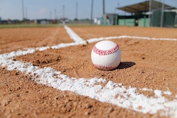
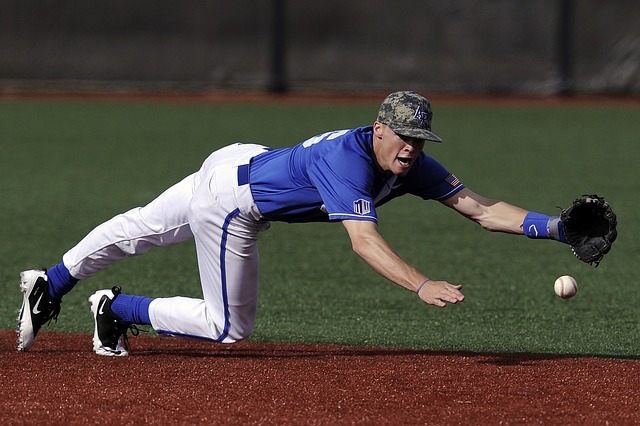

What Is Baseball?
Baseball is a bat-and-ball game played between two teams of nine players each, who take turns batting and fielding. The batting team attempts to score runs by hitting a ball (that is thrown by the opposing team's pitcher) with a bat swung by the batter, and then running counter-clockwise around a series of four bases: first, second, third, and home plate. A run is scored when a player advances around the bases and returns to home plate.

Famous Players
Some of my favorite players are Mike trout, Cody Bellinger, Jose altuve, Edwin Encarnacion, and Josh Harrison. These players are the best of the best, and they were all on the all star teams. These people dominated in exhibition games and were on fire during the season. They were very feared by other baseball players, and many people did not want to face them. Some of the Legends are Babe Ruth, Ricky Henderson, Mickey Mantle, Ken Griffey Jr. , and Jackie Robinson.

Who Plays Baseball?
Only a little bit of people in the united states play baseball. In Fact, only 36% of the United states play baseball. Baseball is an international sport, and every country has a baseball oppurtunity for kids. For example, the Little League World Series is a come together from the best teams that represent where they are from, and fight for the title.
